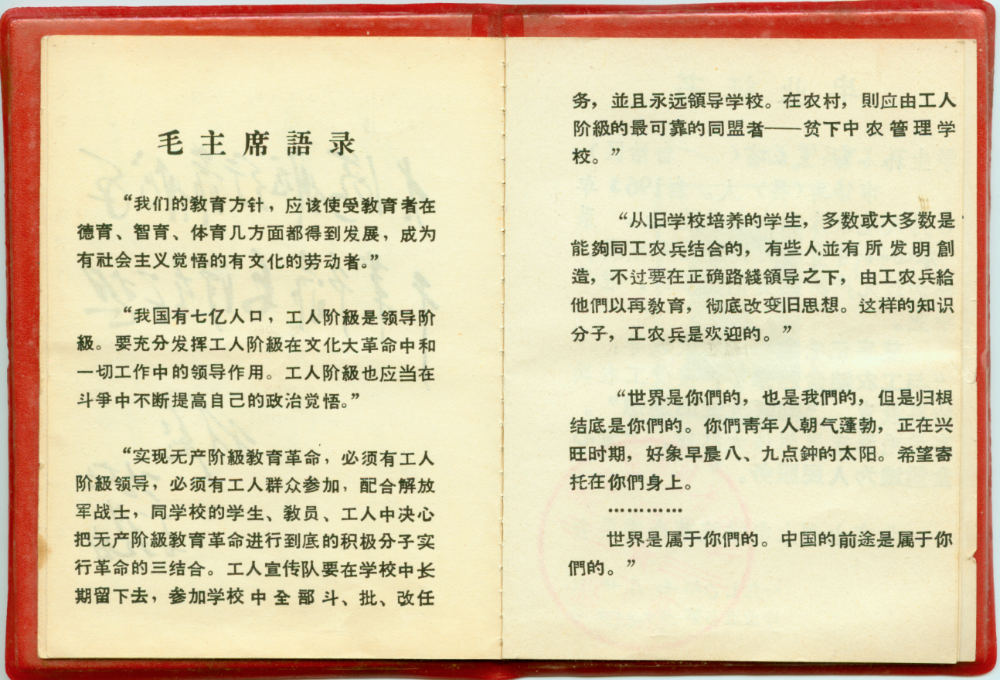
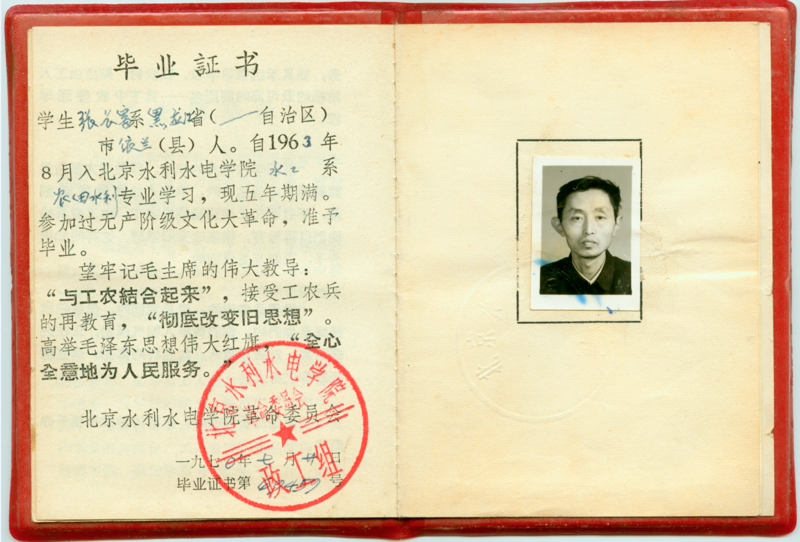
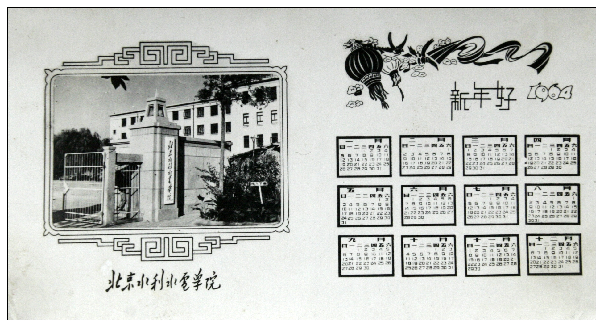
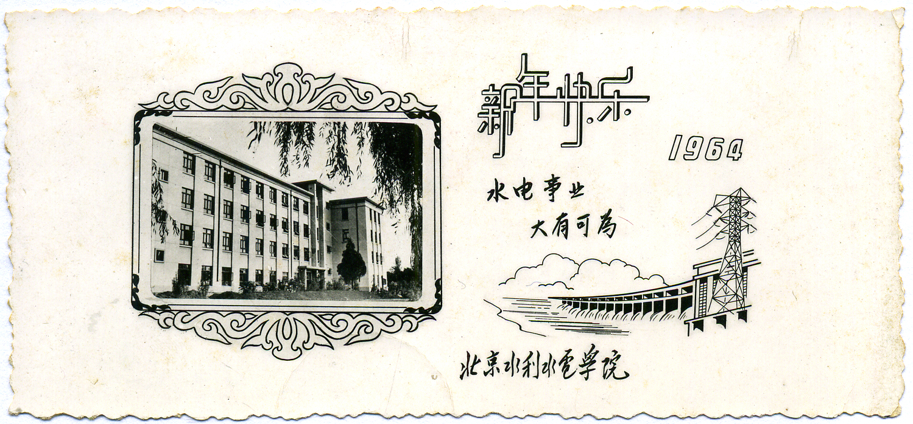

北京时期华水校园

北京时期毕业证正面
新中国成立初期，由当时的水利部部长傅作义于1951年主持创建了学校的前身—水利部北京水利学校。1951年9月15日，中央人民政府水利部在北京创办的水利部水利学校正式开学，校址设在阜城门内巡捕厅十号（今民康胡同）。
新中国成立初期，由当时的水利部部长傅作义于1951年主持创建了学校的前身—水利部北京水利学校。1951年9月15日，中央人民政府水利部在北京创办的水利部水利学校正式开学，校址设在阜城门内巡捕厅十号（今民康胡同）。

北京时期毕业证背面
1953年9月，北京水利学校迁入北京市西郊花园村新建校舍(原华北水利水电学院北京研究生部所在地)。1954年，学校改名为北京水利学校。
1953年9月，北京水利学校迁入北京市西郊花园村新建校舍(原华北水利水电学院北京研究生部所在地)。1954年，学校改名为北京水利学校。

北京时期（64年）贺卡1
1958年10月6日，北京水利学校与北京水利发电函授学院、北京水力发电学校合建北京水利水电学院，在北京市东郊定福庄举行成立大会。院长由北京水利水电科学研究院院长张子林兼任。10月6日确定为校庆日。
1958年10月6日，北京水利学校与北京水利发电函授学院、北京水力发电学校合建北京水利水电学院，在北京市东郊定福庄举行成立大会。院长由北京水利水电科学研究院院长张子林兼任。10月6日确定为校庆日。

北京时期（64年）贺卡2
1958年起，先后接受越南、尼泊尔、印度尼西亚、喀麦隆等国留学生（1966年停止，2004年恢复）。1959年7月23日，北京水利水电学院一部收归水利电力部直接领导，恢复北京水力发电学校。1960年，学校受水利电力部委托负责援建越南水利水电学院。
1958年起，先后接受越南、尼泊尔、印度尼西亚、喀麦隆等国留学生（1966年停止，2004年恢复）。1959年7月23日，北京水利水电学院一部收归水利电力部直接领导，恢复北京水力发电学校。1960年，学校受水利电力部委托负责援建越南水利水电学院。
 北京研究生部时期 首届研究生毕业典礼
北京研究生部时期 首届研究生毕业典礼 1963年，哈尔滨建筑工程学院（后更名哈尔滨建筑大学，已并入哈尔滨工业大学）河川枢纽及水电站建筑专业合并到该校，同年开始招收研究生。1966年4月，周恩来总理来河北地震地区视察，座谈时了解到华北缺乏水利人才，于是提出了将北京水利水电学院从北京迁至邯郸的建议。5月30日，水利电力部致河北省委、省革委将北京水利水电学院迁往河北省邯郸市磁县岳城水库工地。1966年，“文化大革命"开始，学院陷于混乱，停止招生。